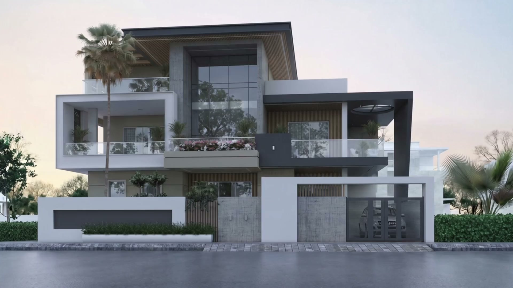
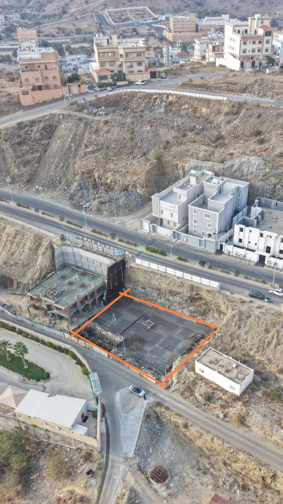
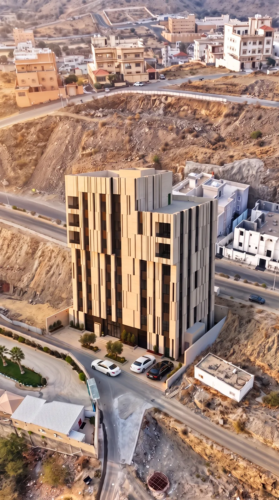
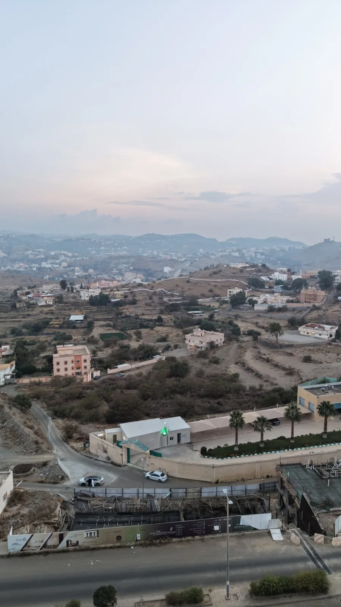
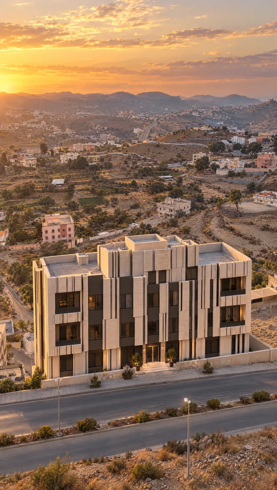
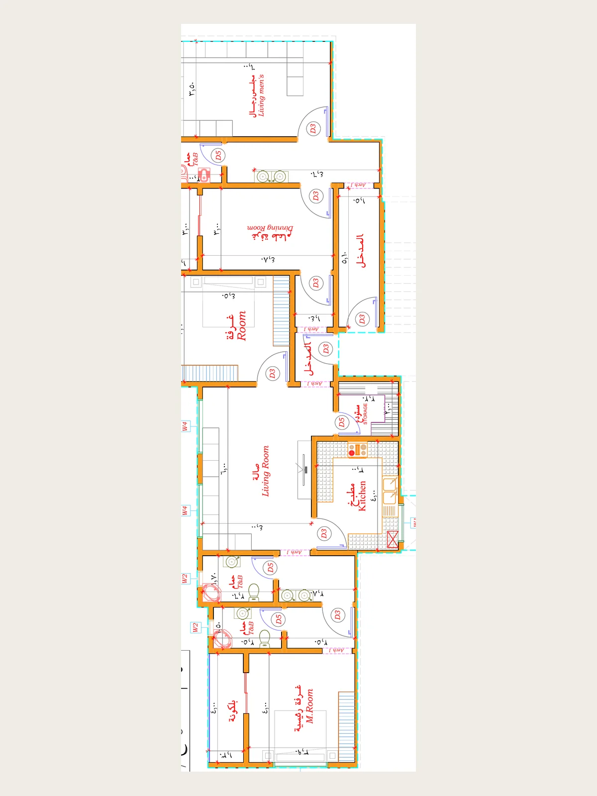
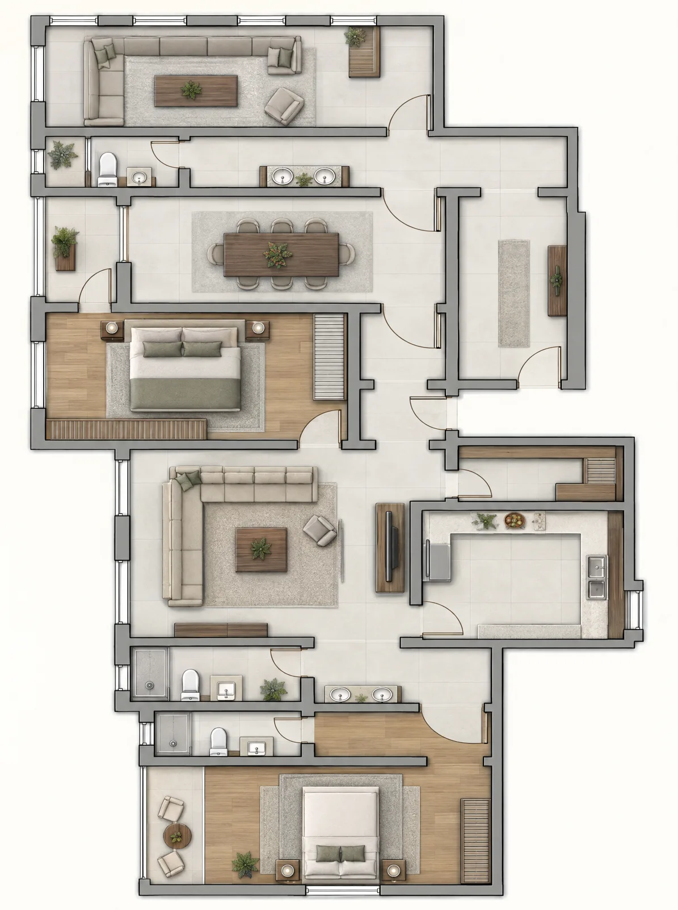

مشهد مولّد بالذكاء الاصطناعي: النهار يتحوّل إلى الساعة الذهبية والسيارة تصل.
مشروعك يبان قبل ما ينبني.
فيديو عقاري بالذكاء الاصطناعي من صورة الأرض الحقيقية، تصوير درون، وكتيّبات مبيعات. لمطوّري ومسوّقي العقار في جدة وما حولها.
المطوّر اللي يبيع على الخارطة، يبيع وعداً.
والمشتري ما يدفع لوعد. يدفع لشي شافه.
الرندر لحاله يطلع كرتوني، والصورة الثابتة ما توقف السكرول.
الحل: المبنى على أرضه الحقيقية، بفيديو، قبل أول صبّة.
الدليل بيدك.
اسحب الخط. اليمين صورة الدرون كما هي، واليسار النتيجة. نفس الزاوية، نفس الشارع، نفس الجيران.






8 فيديوهات تتصفحها الآن.
اضغط أي فيديو ويشتغل بصوته. كل واحد لعميل حقيقي، من الموقع والمسافات إلى المبنى والداخل، بالترتيب اللي يفهمه المشتري.
اشتغلت مع إسعاد العقارية · جيدانة · رواس · تلال العربية · زود العقارية · ترف المساكن · آل صالح · مدارس الأقصى الأهلية والعالمية، وغيرهم الكثير.
كتيّب يقلّبه المشتري، ويرفع السعر.
قلّب الصفحات بيدك. أرقام من الوثائق الرسمية، مخططات بأسلوب واحد، وشعار الهيئة في مكانه. يُطبع ويُرسل PDF في نفس اليوم.
1 / 16
ومن فوق، يبان الحجم الحقيقي.
تصوير درون لمشروعك أو عقارك: لقطات خام بجودة 4K عمودية وأفقية، من دون مونتاج، بـ 499 ريالاً.
تكوين مدروس لا طيران عشوائي. كل لقطة تبدأ من السياق وتنتهي عند الموضوع: الحي كاملاً، ثم الشارع، ثم الواجهة الأمامية بزاوية تبيّن حجمها الحقيقي.
حركة ثابتة وبطيئة. مدار هادئ، كشف من خلف المبنى، ودخول تدريجي. بلا اهتزاز ولا سرعة تفقد المشاهد التفاصيل، ومرشحات ND حتى تبقى الحركة طبيعية في شمس جدة.
وقت التصوير جزء من الصورة. الصباح الباكر أو الساعة الذهبية حتى تبان الألوان صحيحة بلا غبش الساحل، والمدينة بأقل ازدحام.
تسليم تقدر تستخدمه فوراً. اللقطات مرتبة ومسمّاة ومصححة الألوان بشكل خفيف، وجاهزة لمونتاجك أو لمونتاجي. المونتاج والريلز خدمة منفصلة تُسعّر حسب الطلب.
باقة الإطلاق.
كل اللي يحتاجه مشروعك عشان يفتح البيع قبل أول صبّة. تاخذها كاملة، أو قطعة قطعة.
- 1فيديو المشروع بالذكاء الاصطناعي
من خريطة الموقع والمسافات، إلى المبنى على أرضه الحقيقية، إلى الداخل والعائلة. عمودي لتيك توك وإنستقرام، وأفقي للمعرض.
- 2تصوير الدرون
الأرض قبل البناء، ومراحل الإنشاء، والواجهة بعد التشطيب. لقطات حقيقية تثبت التقدم للمشتري والممول.
- 3كتيّب المبيعات
16 صفحة بأرقام الوثائق الرسمية ومخططات بأسلوب واحد. نسخة للطباعة ونسخة خفيفة للواتساب.
أرسل صورة الأرض، وخلّ المشتري يشوف المبنى.
رسالة وحدة على واتساب تكفي للبداية. أرد عليك بنفسي.